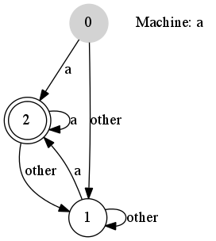

This requires that you install Graphviz on the computer that generates output. If you see the error message "IndexError: list index out of range" then Graphviz cannot be found. In case of such an error check that Graphviz is on your environment "PATH" variable. Depending on how Graphviz was installed, you also may need to run "dot -c" (with installer's privileges) to register the plugins.

